# This will build the basic todo application
# Precondition: The instance of lumieres you want touse is up and running with is welcome screen visible
# Postcondition: A `todo` application will be successfully assembled on the desktop
import lumieres
reload(lumieres)
lumieres.focusLumieres();
lumieresRegion = lumieres.makeNewApplication("todo")
explorer = lumieresRegion.find(Pattern( ).similar(0.60)).below(500)
sleep(1)
templateExplorer = lumieresRegion.find(
).similar(0.60)).below(500)
sleep(1)
templateExplorer = lumieresRegion.find( )
digitPackageRegion = find(
)
digitPackageRegion = find( )
# Add a title
lumieres.insertDomObject(digitPackageRegion.find(Pattern(
)
# Add a title
lumieres.insertDomObject(digitPackageRegion.find(Pattern( ).similar(0.81)),
).similar(0.81)),  , "child")
wait(Pattern(
, "child")
wait(Pattern( ).targetOffset(20,12), 3)
doubleClick(getLastMatch())
type("Things Worth Doing")
# Add a rangeController to manage the collection of the owner's tasks
dragDrop(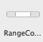, templateExplorer)
# Add a list to present the tasks
lumieres.insertDomObject(digitPackageRegion.find(
).targetOffset(20,12), 3)
doubleClick(getLastMatch())
type("Things Worth Doing")
# Add a rangeController to manage the collection of the owner's tasks
dragDrop(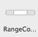, templateExplorer)
# Add a list to present the tasks
lumieres.insertDomObject(digitPackageRegion.find( ),
),  , "next")
#Set the list to receive its content from the rangeController we created
dragDrop(Pattern(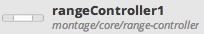).similar(0.51), Pattern(
, "next")
#Set the list to receive its content from the rangeController we created
dragDrop(Pattern(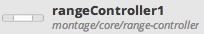).similar(0.51), Pattern( ).targetOffset(33,59))
#Remove the placeholder list content
hover(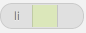)
click(Pattern(
).targetOffset(33,59))
#Remove the placeholder list content
hover(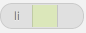)
click(Pattern( ).similar(0.54).targetOffset(43,0))
# Create a component to encapsulate the presentation of a task in the list
#TODO why does click not work?
click(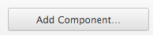)
sleep(1)
mouseDown(Button.LEFT)
mouseUp(Button.LEFT)
wait(
).similar(0.54).targetOffset(43,0))
# Create a component to encapsulate the presentation of a task in the list
#TODO why does click not work?
click(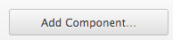)
sleep(1)
mouseDown(Button.LEFT)
mouseUp(Button.LEFT)
wait( , 2)
type("task")
click(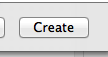)
sleep(1)
explorer.wait(
, 2)
type("task")
click(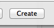)
sleep(1)
explorer.wait( , 1)
wait(
, 1)
wait( , 2)
#Add a checkbox to complete tasks
lumieres.insertDomObject(
, 2)
#Add a checkbox to complete tasks
lumieres.insertDomObject( ,
,  , "child")
checkboxCard = find(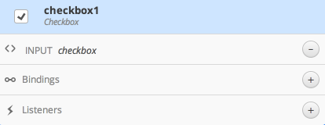)
# Bind the checkbox to the task's completed state
checkboxCard.inside().find(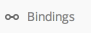).right().click()
lumieres.bind("checked", False, "@owner.task.completed")
# Add a textfiled to edit the title of the task
lumieres.insertDomObject(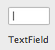, 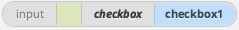, "next")
taskTitleCard = find(
, "child")
checkboxCard = find(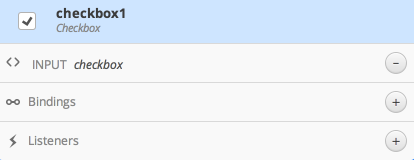)
# Bind the checkbox to the task's completed state
checkboxCard.inside().find(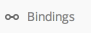).right().click()
lumieres.bind("checked", False, "@owner.task.completed")
# Add a textfiled to edit the title of the task
lumieres.insertDomObject(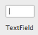, 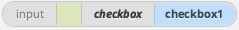, "next")
taskTitleCard = find( )
taskTitleCard.inside().find().right().click()
lumieres.bind("value", False, "@owner.task.title")
#save this component so we can use it in the main component
lumieres.save()
#switch back to the main component
click()
sleep(2)
#add our task component to the list
lumieres.insertDomObject(Pattern(
)
taskTitleCard.inside().find().right().click()
lumieres.bind("value", False, "@owner.task.title")
#save this component so we can use it in the main component
lumieres.save()
#switch back to the main component
click()
sleep(2)
#add our task component to the list
lumieres.insertDomObject(Pattern( ).similar(0.73).targetOffset(1,-6),
).similar(0.73).targetOffset(1,-6),  , "child")
sleep(1)
taskCard = find(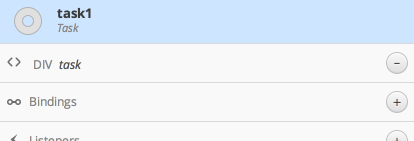)
taskCard.find().right().click()
#bind the task property of the task component to the list's current iteration
lumieres.bind("task", True, "@list1.objectAtCurrentIteration")
lumieres.save()
#Add a new task button
lumieres.insertDomObject(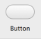,
, "child")
sleep(1)
taskCard = find(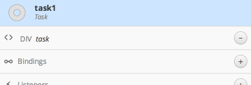)
taskCard.find().right().click()
#bind the task property of the task component to the list's current iteration
lumieres.bind("task", True, "@list1.objectAtCurrentIteration")
lumieres.save()
#Add a new task button
lumieres.insertDomObject(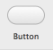,  , "next")
doubleClick(
, "next")
doubleClick( )
type("New Task")
#add an actionEventListener to call the addContent method on the rangeController
dragDrop(
)
type("New Task")
#add an actionEventListener to call the addContent method on the rangeController
dragDrop( , templateExplorer)
wheel(templateExplorer, WHEEL_UP, 100)
dragDrop(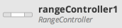, 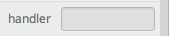)
type(
, templateExplorer)
wheel(templateExplorer, WHEEL_UP, 100)
dragDrop(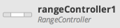, 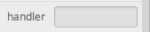)
type( , "addContent")
# Add the actionEventListener as listener of new Task button
wheel(templateExplorer, WHEEL_DOWN, 100)
buttonCard = find(
, "addContent")
# Add the actionEventListener as listener of new Task button
wheel(templateExplorer, WHEEL_DOWN, 100)
buttonCard = find( )
buttonEvent = buttonCard.find(
)
buttonEvent = buttonCard.find( ).right().find(
).right().find( )
actionListenerCard =
)
actionListenerCard =  dragDrop(buttonEvent, actionListenerCard)
click(
dragDrop(buttonEvent, actionListenerCard)
click( )
#add a badge to count the remaining tasks
lumieres.insertDomObject(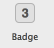,
)
#add a badge to count the remaining tasks
lumieres.insertDomObject(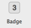,  , "next")
badgeCard = find(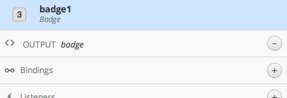)
badgeCard.find().right().click()
lumieres.bind("value", True, "@rangeController1.organizedContent.filter{!completed}.length")
lumieres.save()
#TODO insert completed toggle
#TODO insert hr's for formatting
#TODO wire up a remove button
, "next")
badgeCard = find(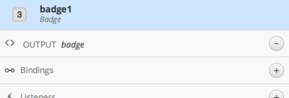)
badgeCard.find().right().click()
lumieres.bind("value", True, "@rangeController1.organizedContent.filter{!completed}.length")
lumieres.save()
#TODO insert completed toggle
#TODO insert hr's for formatting
#TODO wire up a remove button